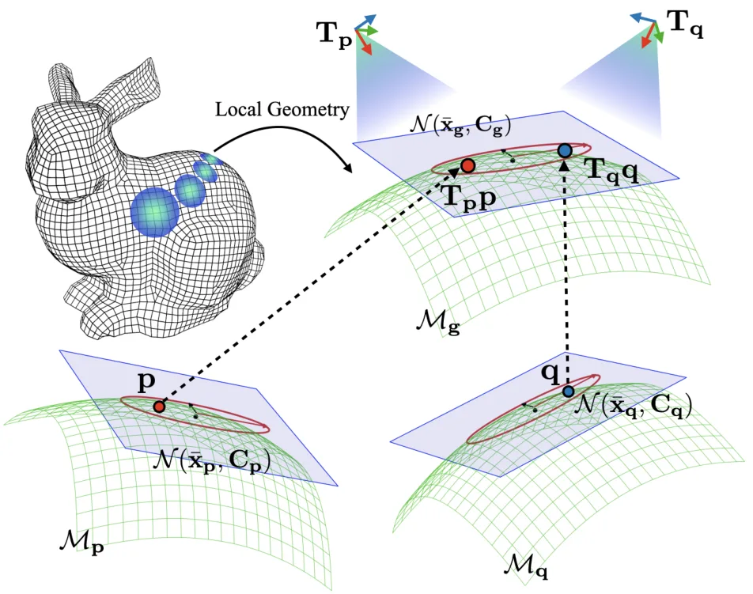
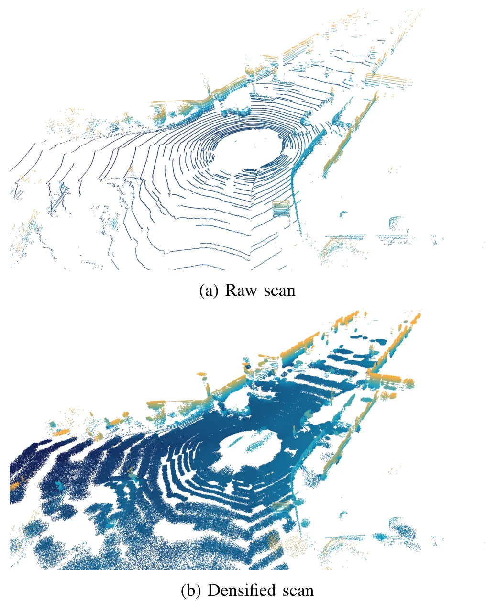
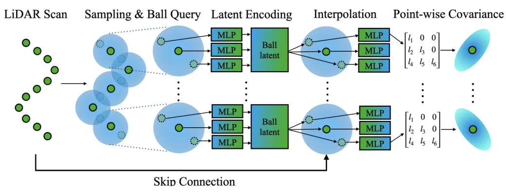
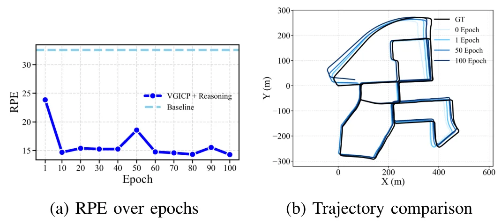
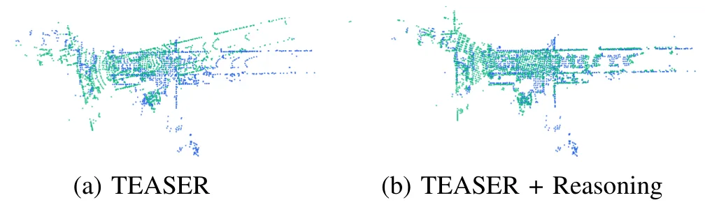
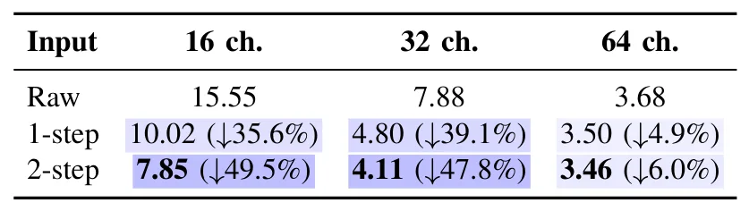
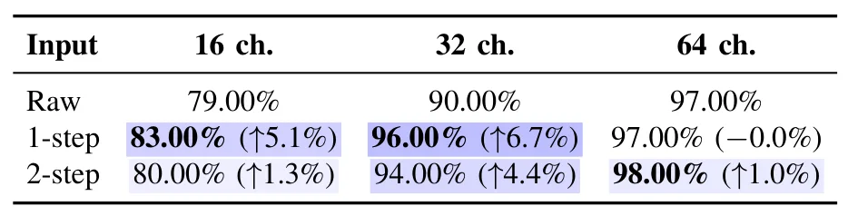

用于 LiDAR SLAM 的自监督几何推理Self-supervised Geometry Reasoning for LiDAR Simultaneous Localization and Mapping
直接命中 LiDAR SLAM、点云局部几何、配准和后端可插拔方向；若能稳定输出可解释 covariance，对 LiDAR-IMU/GNSS 融合也有潜在价值。
一句话工作总结
把局部协方差/对应关系/轨迹一致性做成 LiDAR SLAM 自监督闭环，目标是在稀疏或低线束点云中获得更可靠的几何权重。
摘要
LiDAR SLAM 依赖局部协方差、点对应和表面结构等几何量，但传统管线通常手工估计这些量，在稀疏区域或低分辨率 LiDAR 上容易噪声大、不稳定。该文提出自监督框架，把每个点显式表示为 Gaussian distribution，并用 covariance 描述局部几何；无需密集几何标签或真值位姿，而是从预测协方差、对应关系和 SLAM 轨迹的一致性中构造监督。学习到的几何再反馈给 LiDAR SLAM，形成“更好几何提升定位建图、更好定位提供更干净监督”的递归闭环。作者称该框架 backend-agnostic，可插入现有 LiDAR SLAM 管线，并在 KITTI 不同 LiDAR 分辨率下改善 odometry 与 global registration。
LiDAR simultaneous localization and mapping (SLAM) relies on local geometric quantities such as covariances, correspondences, and surface structures. However, most existing pipelines rely on hand-crafted estimates of local geometry and use them as fixed inputs to LiDAR SLAM, which can make the estimated local geometry noisy and unstable in sparse regions of a point cloud or when using low-resolution LiDAR. To address this issue, this paper introduces a self-supervised framework that learns an explicit symbolic representation of local geometry and uses it to improve LiDAR SLAM recursively. Specifically, each point is represented as a Gaussian distribution, allowing local geometry to be described by a covariance. Without dense geometry labels or ground-truth poses, the framework learns by maximizing the likelihood of local geometry, with self-supervision derived from consistency relations over symbolic geometric representations, including predicted covariances, correspondences, and trajectory from SLAM. The learned geometry is then fed back into LiDAR SLAM, forming a reciprocal loop in which improved geometry enhances localization and mapping, and improved localization provides cleaner supervision for subsequent geometry reasoning. This framework is backend-agnostic and can be plugged into existing LiDAR SLAM pipelines without architectural changes. Experiments on KITTI under varying LiDAR resolutions show that the proposed method improves both odometry and global registration.
中文解读摘录
- 为什么看：今天最贴近 SLAM 主线。它把点云局部协方差、对应关系和轨迹估计组成自监督闭环，试图替代传统 LiDAR SLAM 中手工估计且在稀疏/低线束场景下不稳定的局部几何量。
- 方法要点：每个点表示为 Gaussian distribution，用 covariance 描述局部几何；不需要密集几何标签或真值位姿，而是从 SLAM 产生的协方差、对应关系和轨迹一致性中构造 self-supervision。
- 结果信号：作者称框架 backend-agnostic，可插入现有 LiDAR SLAM 管线；KITTI 不同 LiDAR 分辨率实验中同时改善 odometry 与 global registration。
- 跟踪建议：重点看学习几何量如何进入 scan-to-map/registration 残差、训练是否依赖特定前端，以及低分辨率 LiDAR 下对回环/全局配准的增益是否稳定。
- 链接：abs · PDF
图表/页面预览

{kind=link}

{kind=link}

{kind=link}

{kind=link}

{kind=link}

{kind=link}

{kind=link}
